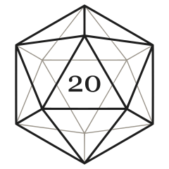
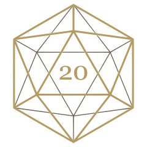
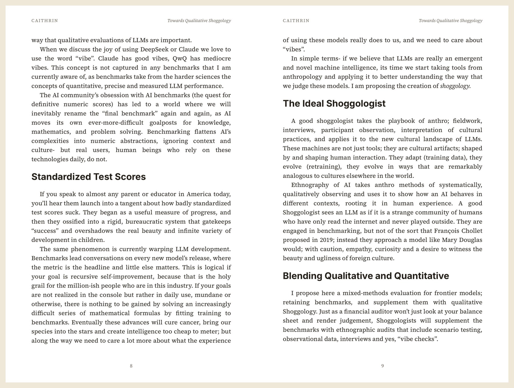

caithrinA note to readers
For your bookshelf.
Collected essays, in print. Forty pieces from January 2025 to August 2026, gathered into one paperback.
Independent editions.
Identity & art direction
Visual proof · Before the site
Your writing has a life
beyond the inbox.
A contemporary publisher's system.
Clear identity. Individual books. One print button.
The direction
Inksheaf supplies a recognisable format and a clear path to print. The writer supplies the name, the voice and the readers. Strong black typography holds the system together; the books bring the colour.
01 / LegibilityThe name reads in a glance, from a browser tab to a book's imprint.
02 / MaterialA 6 × 9 paperback, seen from above. Paper edges, a matte cover, a real contact shadow.
03 / DistributionA button in the writer's next post. A book on the reader's shelf.
01 / Identity
A heavy lowercase wordmark with a square ink dot and a redrawn, open k. Optical spacing gives the name its rhythm. No separate decorative crest.
Working sizes · Actual CSS widths
160px preferred minimum; 120px for constrained interfaces.
Reverse master
The i is a compact signature, not a replacement for the name. Inspect 1:1 favicon renders.
Give it room. Clear space equals twice the width of the i's dot. Use the supplied small master at small sizes; do not squash the large one.
Keep authorship clear. Inksheaf belongs on the site, correspondence and small back-cover imprint. The publication owns its front and spine.
Use one colour. Black on light backgrounds; white on dark backgrounds. No engraving effect, gradients, stroked/hollow variant or detached wheat icon.
The earlier serif study was readable but too close to the rejected direction. This comparison is historical, not a new recommendation. The new lettering gives the publisher a distinct role while serif typography stays available to the writers' books.
02 / Colour
The interface stays neutral. Colour on a cover belongs to that cover. Substack's signature orange belongs to the print button shown inside a post.
Orange is sampled from Substack's own publication. Dark button text preserves the orange while meeting contrast requirements. Publication themes can use other accents; Substack documents that customisation.
Ink on paper. A restrained rule. A clear next step.
Dark surfaces change. The physical book keeps its colours.
03 / Typography
Inter / Display & interface
Your Substack.
In print.
Aa Bb Cc Dd Ee Ff Gg
0123456789 & ? !
Display 72/74 · −0.055em / Mobile 42/44
Body 18/29 · Labels 13/20
Source Serif 4 / Reading, editorial leads & selected covers
Words worth
returning to.
Aa Bb Cc Dd Ee Ff Gg
0123456789 & ? !
Screen reading 18/30 · 55–65 characters per line
Print body size comes from the validated renderer.
Both families are self-hosted under the SIL Open Font License. Two families across the system. Serif is also allowed for one short editorial lead beside an image; section headings and utility copy stay sans. No tiny italic utility text; no letterspacing applied to paragraphs.
A suggestion of paper. A slightly warmer reading leaf, a trace of grain and one quiet folio. The fine edge catches the light. These details belong to the book and reading specimens; use them sparingly.
04 / The object
The front is exactly 2:3. The camera looks straight down; only rotation within the tabletop is allowed. A single book lies flat, without an invented perspective.
Material specification
Side profile, enlarged: the upper dark band is the front cover, the ruled middle is the paper block, and the lower dark band is the back cover resting on the surface.
This is a deterministic geometry visualization, not a photograph of a newly printed edition. A true overhead view reveals very little of the page block.
05 / Cover collection
One safe area, one metadata baseline, four compositions. The title and original logo belong to the writer. These are possibilities for the same caithrin edition, not four customer endorsements.
The owner's real publication name and verified brand artwork. All four are proposed cover options.
Same book, different design. Masthead uses the publication's colour. The other covers are composed palettes, with the publication’s original drawing preserved.
Fixed foundation. 10% safe area, shared edition/date fields, common bottom metadata baseline. Inksheaf is absent from the front and spine.
Honest scope. These are visual prototypes. The selected system still needs integration and the renderer's print checks before it can become a production preset.
Publication logo backgrounds
The default uses the owner’s existing transparent vector masters: charcoal on light stock, gold on dark stock. The drawing stays intact and the square disappears.


When only an opaque image exists: make its flat background part of a full-width publication band, with the logo and edition metadata together. Let the surrounding cover palette adapt: Field notes uses one continuous charcoal lower block in this fallback. Try “Opaque original · integrated band” above. A transparent master is preferred; a square plate is no longer the default. Photograph or complex-background logos stay intact. Background removal or a one-colour adaptation requires the writer’s proof review.
06 / Inside the edition
Real prose, comfortable margins, running heads and page numbers. A contents page alone cannot demonstrate that a book is worth reading.

Read on screen. 18px prose, left aligned, with ordinary paragraph spacing. The reader must be comfortable on a phone.
Inspect print pages. A separate mode preserves the true page layout. Show which mode is active; keep page controls outside the page.
Preserve the work. Use actual excerpts. Keep source links, bylines, captions and notes. Flag missing assets for the writer's proof review.
07 / The subscriber button
This is the core feature. The writer makes an edition; the reader buys it from a familiar button in the newsletter.
The button below opens the existing caithrin listing. It does not create an order. A new publication gets a preview link until its edition is actually available.
08 / The interface
Working component samples, not a rebuilt site. Plain labels, native keyboard behaviour and explicit feedback. No custom cursor or scroll interception.
Publication entry / Idle → validation → preview request
A link while the edition is being made
Suggested label: “Preview a print edition of caithrin”.
Interaction language
That archive is taking too long to read. Ask for a hand-built preview.
FAQ / Native disclosure
Short answers first. Pricing context stays in the answer, not a competing headline.
Making an edition is free during the beta. Readers pay Lulu per copy, plus shipping and any tax. The published 294-page caithrin edition was listed at its $9.34 print cost; one real order totalled $16.58. Your preview estimates your edition from its page count. Final checkout prices come from Lulu.
Once you approve the proof and the edition is listed, add a custom button to a Substack post. Label it “Get a print copy” and link directly to the edition's Lulu page. Lulu takes payment, prints the copy and ships it. Until then, share a preview link.
Beta editions are offered at print cost. Creator margins and payouts are still being worked through with beta writers; they are not an automated beta feature today.
This beta is for publication owners printing their own work. You retain ownership. We confirm your permission and you approve the proof before an edition is listed.
Yes. Choose from four covers, using your publication's name and original logo. Read an actual excerpt and inspect print pages in the preview. You review the full proof before anything prints.
A 6 × 9 inch matte paperback, perfect bound. We recommend volumes below 300 pages. A longer archive can become a set of quarterly volumes. The current production system refuses volumes above 800 pages.
The public preview reads public posts. To include paid writing, send your own Substack export during onboarding; we do not need your password. Subscriber files are deleted unread; the posts are kept for your edition.
Images are included where available. Missing images are flagged; video, tweets and other web-only embeds receive printed source notes. We review these with you in the proof.
US delivery during the private beta. Production timing is confirmed with each writer before listing. Requesting a place does not order a book or guarantee a delivery date.
Yes: the caithrin collected essays, 40 pieces from January 2025 to August 2026, 294 pages. See the existing edition on Lulu. The spread in this guide comes from its print file.
Caithrin, at caithrin@caithrin.com. Feedback goes directly to the builder.
09 / How the system holds together
Research behind the direction
Fitzcarraldo — overhead objects and a coherent series. A24 Books — quiet shop furniture, expressive covers. Stripe Press — book as dominant image. Penguin Great Ideas / We Made This — type-led covers with individual character.
Primary references inspected September 7, 2026. Their assets and identities are not reused here. The guide is a proposed system, awaiting the owner's judgment. Site integration, print validation and approval-gated release follow separately.